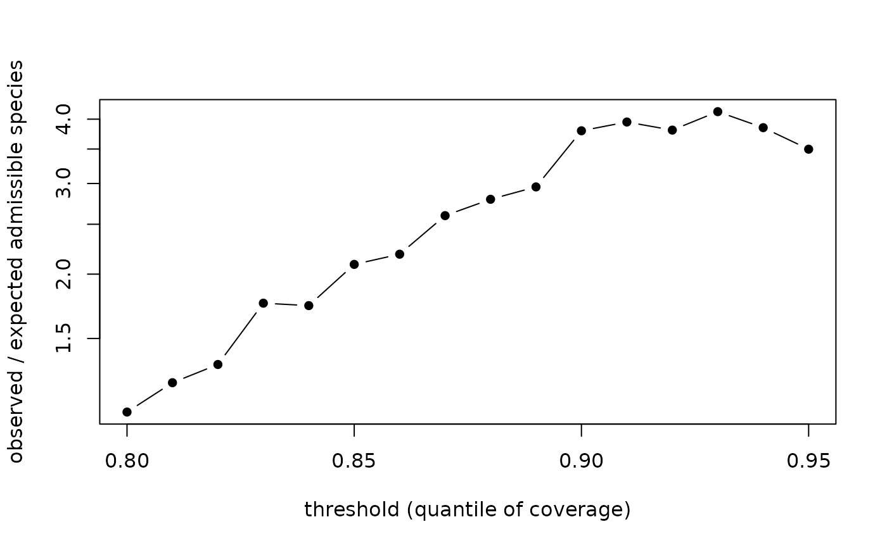

The central methodological caution of the source studies: the direction of the single-threshold aggregate test is, in general, a property of the threshold, not of the region – in the global analysis its verdict reversed with the threshold in 89% of the world's ecoregions, because observed coverage is bimodal while null coverage is unimodal, so the two distributions must cross. Any aggregate null test on a thresholded, bimodally distributed similarity statistic should either demonstrate that the sign of its result is stable across a stated threshold range, or report the full sweep.
Usage
dn_sweep(
obs,
null_mean,
null_sd,
quantiles = seq(0.8, 0.99, by = 0.01),
pooled_obs = NULL
)Arguments
- obs
length-n observed coverage values for one region.
- null_mean, null_sd
per-species null moments (as
dn_aggregate()).- quantiles
threshold quantiles of the observed distribution (default
seq(0.80, 0.99, by = 0.01)).- pooled_obs
optional vector from which threshold quantiles are computed (e.g. all regions pooled); defaults to
obs.
Value
object of class dn_sweep_result: data.frame with one row per
threshold plus attributes direction_change (logical) and monotone.
Details
Thresholds are placed at quantiles of the pooled observed coverage distribution, so the sweep is comparable across regions.
Examples
set.seed(1)
obs <- c(rbeta(300, 0.3, 3), rbeta(100, 4, 1.5)) # bimodal, like real data
mu <- rbeta(400, 1, 2.2); sdv <- 0.08 + 0.1 * runif(400)
sw <- dn_sweep(obs, mu, sdv)
sw # prints a warning if the verdict reverses across thresholds
#> Threshold sweep of the aggregate null test
#> thresholds: q0.80 - q0.99 (20 points)
#> obs/expected ratio: 1.079 - 4.137
#> direction is stable across the sweep.
#> 4/20 thresholds unreliable (expected < 5); not shown.
plot(sw)
